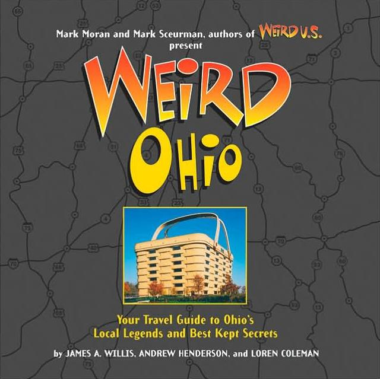

My second book, Weird Ohio, was published in November of 2005 by Barnes & Noble, New York City. It was co-authored with James Willis from Ghosts of Ohio and cryptozoology researcher and writer Loren Coleman, and it is one in the Weird US series edited by Mark Sceurman and Mark Moran, the creators of Weird NJ. The two Marks got in contact with me in late 2004 about working on an Ohio title for their series and I eagerly accepted, happy to be working with the two biggest names in weird local legends and forgotten history. Mark and Mark have been writing about this stuff longer than just about anyone, and their magazine is a huge success even outside the Garden State.
The book is a gorgeous hardcover, slightly oversized, with 256 pages of text and photos, most in color. The chapters include ones on Ohio Ghosts, Roadside Oddities, Cemeteries, and Abandoned Places, as well as things like "Local Heroes and Villains" and "Roads Less Travelled." Since I don't focus on general history, roadside attractions, or monster sightings on my website, James Willis and Loren Coleman wrote many of the pieces under those headings. I'm responsible for a little more than a third of the material, both written and photographed, and many personal stories which were e-mailed to Forgotten Ohio appear in the book verbatim. Notable transfers from this website to the Weird Ohio book include the haunted woods on Old Xenia Road, Lake View Cemetery, the Cincinnati subway, Walker Funeral Home, and a tour of Ohio's abandoned drive-in movie theaters, among many others. I also wrote original pieces about Outdoorsman Sniper Thomas Lee Dillon, family murderer James Ruppert, and Milwaukee Cannibal Jeffrey Dahmer. James Willis brings his comprehensive knowledge of Ohio's ghost stories to those sections, and Loren Coleman describes the bigfoots, giant frogs, anacondas, and lake monsters that call our state home.
You can find Weird Ohio at pretty much any Ohio bookstore, but especially Barnes & Noble, where James and I will be doing many book signings in December and January of 2005/2006. To order online you can use one of the links below. If you'd like me to sign your book at another time, feel free to get in touch and we can arrange something. I can only hope you'll have as much fun reading and using Weird Ohio as I did working on it.
My first book, Forgotten Columbus, is covered on this page.
Weird Ohio at Amazon.com
Weird Ohio at Barnes & Noble
Back
forgottenohio@yahoo.com
facebook.com/andy.henderson.319